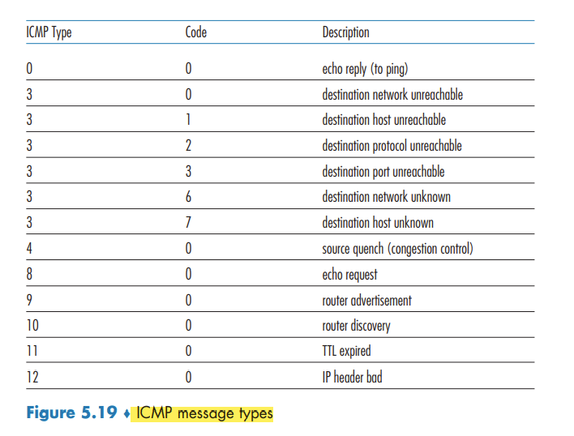

The Network Layer: Control Plane
Sections 5.1, 5.2 and 5.6 are part of the curriculum for TTM4100.
Introduction
the control-plane component of the network layer—the network-wide logic that controls not only how a datagram is routed along an end-to-end path from the source host to the destination host, but also how network-layer components and services are configured and managed.
In this chapter, we’ll study how those forwarding and flow tables are computed, maintained and installed. there are two possible approaches for doing so.
- Per-router control.
- Logically centralized control.
Routing Algorithms
routing algorithms, whose goal is to determine good paths (equivalently, routes), from senders to receivers, through the network of routers.
an edge’s cost may reflect the physical length of the corresponding link, the link speed, or the monetary cost associated with a link.
Broadly, one way in which we can classify routing algorithms is according to whether they are centralized or decentralized.
- A centralized routing algorithm computes the least-cost path between a source and destination using complete, global knowledge about the network. Algorithms with global state information are often referred to as link-state (LS) algorithms, since the algorithm must be aware of the cost of each link in the network.
- In a decentralized routing algorithm, the calculation of the least-cost path is carried out in an iterative, distributed manner by the routers.
A second broad way to classify routing algorithms is according to whether they are static or dynamic. In static routing algorithms, routes change very slowly over time, often as a result of human intervention. Dynamic routing algorithms change the routing paths as the network traffic loads or topology change.
A third way to classify routing algorithms is according to whether they are load-sensitive or load-insensitive. In a load-sensitive algorithm, link costs vary dynamically to reflect the current level of congestion in the underlying link.
The Link-State (LS) Routing Algorithm (Ikke pensum!)
in a link-state algorithm, the network topology and all link costs are known
In practice, this is accomplished by having each node broadcast link-state packets to all other nodes in the network, containing the identities and costs of its attached links.
oscillations can occur in any algorithm, not just an LS algorithm, that uses a congestion or delay-based link metric. Solutions are
- to mandate that link costs not depend on the amount of traffic carried - an unacceptable solution since one goal of routing is to avoid highly congested links.
- to ensure that not all routers run the LS algorithm at the same time.
The Distance-Vector (DV) Routing Algorithm (Ikke pensum!)
the distance-vector (DV) algorithm is iterative, asynchronous, and distributed.
the least costs are related by the celebrated Bellman-Ford equation, namely, dx(y) = minv{(x, v) + dv(y)} where the minv in the equation is taken over all of x’s neighbors.
as long as all the nodes continue to exchange their distance vectors in an asynchronous fashion, each cost estimate Dx(y) converges to dx(y), the actual cost of the least-cost path from node x to node y
The algorithm remains in the quiescent state until a link cost changes
ICMP: The Internet Control Message Protocol
used by hosts and routers to communicate network-layer information to each other. The most typical use of ICMP is for error reporting.
ICMP is often considered part of IP, but architecturally it lies just above IP, as ICMP messages are carried inside IP datagrams, as IP payload,
CMP messages have a type and a code field, and contain the header and the first 8 bytes of the IP datagram that caused the ICMP message to be generated in the first place (so that the sender can determine the datagram that caused the error).

Traceroute program, which allows us to trace a route from a host to any other host in the world. implemented with ICMP messages. Each of these datagrams carries a UDP segment with an unlikely UDP port number. The first of these datagrams has a TTL of 1, the second of 2, the third of 3, and so on.
A new version of ICMP has been defined for IPv6 added new types and codes required by the new IPv6 functionality. These include the “Packet Too Big†type and an “unrecognized IPv6 options†error code.